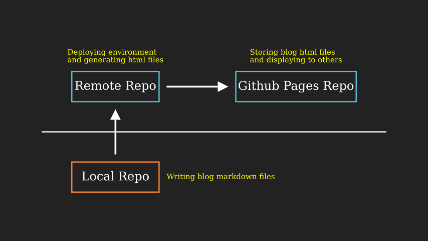
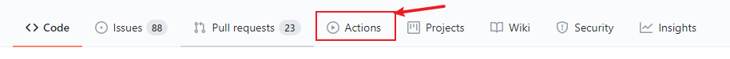
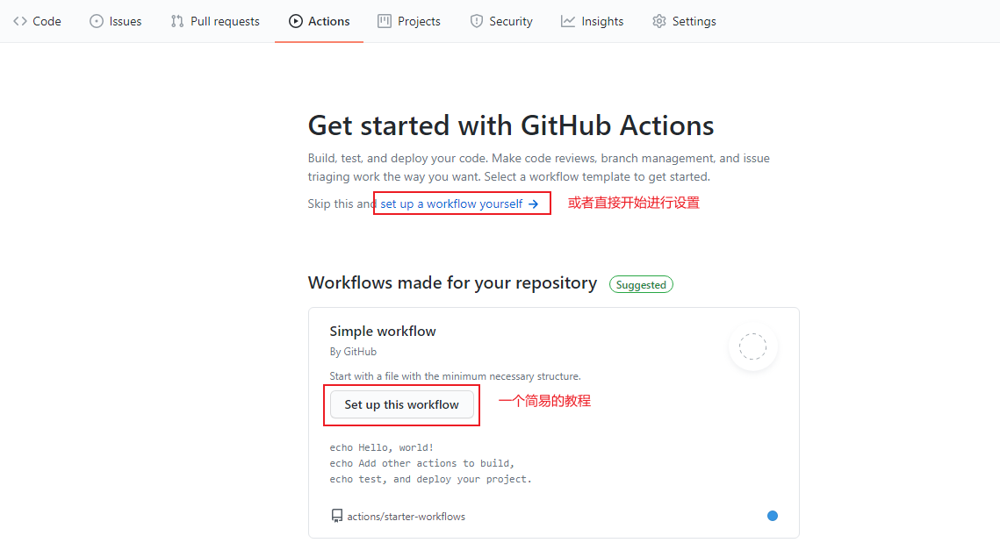
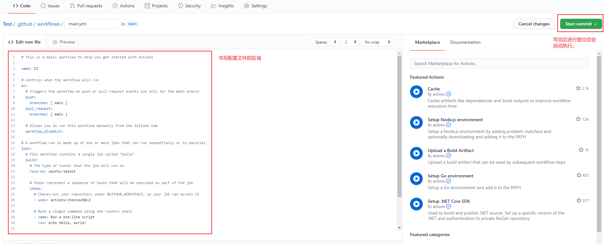

通过 Github Actions 部署 Hexo 博客（一）
前言：最近看了一些使用 Github Action 去自动化部署博客的文章，看了之后发现确实可以省去部署博客到远程仓库的步骤。使用这个可以带来的好处如下
- 本地不再需要 Hexo 环境（当然第一次初始化部署还是需要的），即写好博客后不再需要
hexo clean && hexo g && hexo d这种生成文章并提交到远程仓库的步骤了。 - 本地只需要写好博客源文件(markdown格式)后再提交到远程仓库（也有一种更方便的 issue blog ，这种后面再说，先说基础版的）
- 第一次在 Github 上搭建好部署环境后，就可以脱离 hexo 的环境了，专注于写作上面。

下面是基础版的部署详细部署配置内容。
准备本地环境
第一次的使用还是需要安装 Hexo 环境的，因为需要初始化项目。
如果没有安装，使用如下方式进行安装：
1 | cnpm/npm instal hexo |
先进行 Hexo 环境初始化（注意 hexo 初始化需要你的文件夹是空的）：
1 | hexo init |
执行完毕后会发现目录下多了几个文件，如下面所示：
1 | |- .gitignore |
现在在本地测试下 hexo 是否正常运行：
1 | hexo g |
如果可以生成文件则可以继续进行下面的步骤。
当前的文件夹还不是一个 git 仓库，所以先初始化它吧：
1 | git init |
之后将仓库里的所有文件提交到远程仓库里：
1 | git add . |
注意：上面的步骤并没有设置 hexo 的主题，使用的是默认的主题，因为需要先了解下最小的部署成功的样例，至于主题设置样式那些可以在部署成功后慢慢改进。
准备 Github Action 配置文件
首先在你存放博客源码的仓库里找到下图的位置

点击进去，可以直接进行设置，或者可以看下官方的一个小 demo.


下面是一个初级版本的配置：只是在 github 上进行生成文件的测试，没有将生成的文件部署到另一个仓库的步骤。
主要有三个步骤：
- 将博客源码仓库 clone 到机器上
- 准备部署的环境
- 运行 hexo 命令将 markdown 文件转换成 html 文件
1 | # 初级版本 |
设置完之后 commit 下这个配置文件。
测试基础版配置是否成功
到仓库里的 Action 页面去查看下触发的任务，观察下它的运行状态，如果有报错，需要到它打印的日志里看下报错信息然后对配置文件或其他地方进行修改。成功的话，它也会进行提示的！
好了，基础配置部分到这里就结束了，下面就开始进行将生成的 html 文件部署到我们的另一个发布仓库吧！
有问题请在 issue 中进行评论吧~